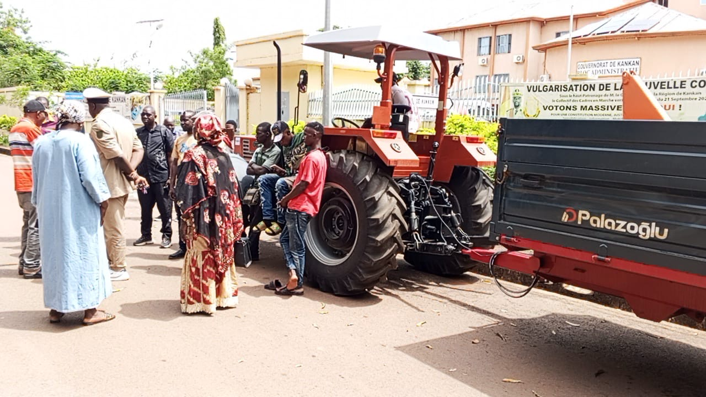

Augmenter les volumes et les rendements de maïs sur l’ensemble de la zone.
Compétences techniques et organisationnelles des producteurs.
Systèmes de stockage et de conservation plus performants.
Valorisation locale du maïs et création de valeur ajoutée.
Organiser l’accès aux marchés et sécuriser les débouchés.
Améliorer l’accès des producteurs au crédit agricole.
Promouvoir des pratiques adaptées au changement climatique.
Sur la période 2026-2030, la FUPROMA-HG concentre ses efforts sur la modernisation des infrastructures, la mécanisation et la digitalisation des services aux producteurs.

Développer des infrastructures de stockage adaptées pour réduire les pertes post-récolte.
Faciliter l’accès aux équipements agricoles modernes.
Créer des unités locales pour valoriser la production.
Développer des filières performantes et rentables.
Faciliter les financements adaptés aux besoins des producteurs.
Promouvoir la digitalisation des services aux producteurs.